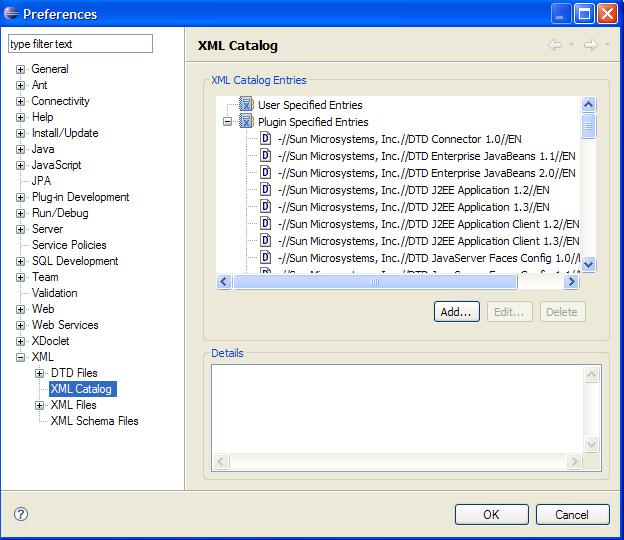
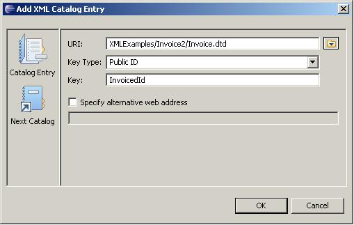
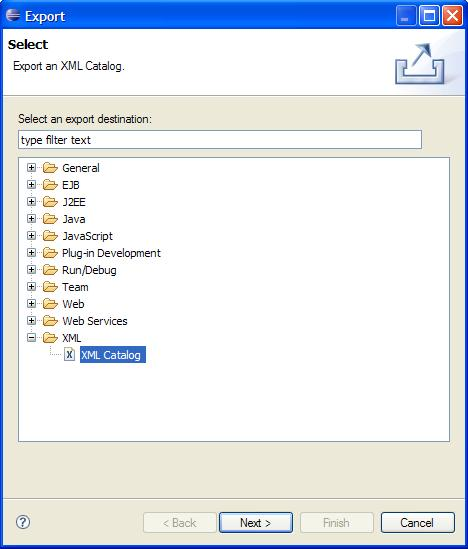
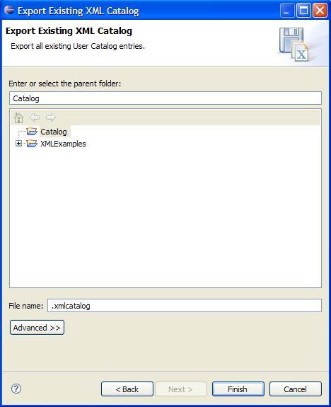
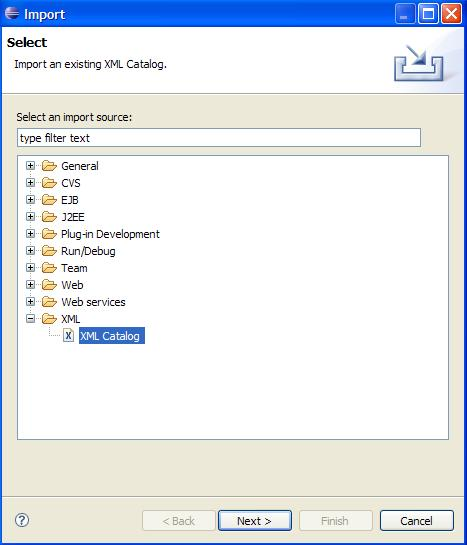
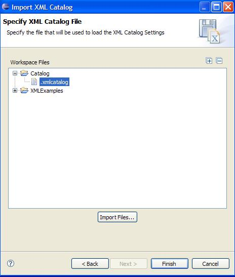

| |
By Richard Mah
Created on December 17, 2004
Last updated on March 24, 2008
In this tutorial, we will demonstrate the use of the XML Catalog. Add the Example “Editing and
validating XML files”. Select File -> New -> Other -> Examples -> Editing and Validating
XML files. To demonstrate the XML Catalog, let’s use Invoice.dtd and Invoice.xml located in the
XMLExamples project.
- Create a new folder “Invoice2” in the project “XMLExamples”.
- Move Invoice.dtd located in XMLExamples\Invoice\ to the new location XMLExamples\Invoice2.
- Validate Invoice.xml. See the validating XML tutorial. Notice the validation has generated a
warning. This is because Invoice.dtd cannot be found. To fix this problem, we shall add an entry into
the XML Catalog (demonstrated below).
|
| |
| Adding
and Removing from the XML Catalog |
The XML Catalog can be accessed through the preferences.
- Select “Window -> Preferences” to launch the Preferences dialog.
- Expand the “XML” heading and select “XML Catalog”.
The dialog should appear as in Figure 1.
Figure 1

Adding an XML Catalog Entry
- From the Preferences XML Catalog dialog, select “Add…”.
- In the “New XML Catalog Entry” dialog, fill in the values as they appear Figure 2.
Figure 2

- Click “OK” to finish. Notice there is a new entry, InvoiceId, under “User
Specified Entries”.
- Validate Invoice.xml again. Notice it is now valid.
Removing and Editing an XML Catalog Entry
To remove or edit an entry, simply select the entry and click on “Delete” or
“Edit…”.
| Importing
and Exporting a Catalog |
XML Catalog entries can be saved to a file for later use. This avoids users having to add entries to an XML
Catalog when they have already done so in a previous workspace.
Exporting XML Catalog settings:
- Select “File -> Export...” to launch the Export dialog.
- Expand the “XML” heading and select “XML Catalog” like in Figure 3.
Figure 3

- The “Export Existing XML Catalog” dialog will appear. See Figure 4. Select the
Project “Catalog” (create if ncecessary) as the location to store the XML Catalog settings
file. Enter “.xmlcatalog” as the file name. Click “OK” to finish. The entries
specified in the XML Catalog will now be saved in the file.
Figure 4

Importing XML Catalog settings:
- Select “File -> Import...” to launch the Import dialog.
- Expand the “XML” heading and select “XML Catalog” like in Figure 5.
Figure 5

- The “Import XML Catalog” dialog will appear. See Figure 6. Select the file
containing the XML Catalog settings (.xmlcatalog) and click “OK” to finish. The entries
specified in the file will now be in the XML Catalog.
Figure 6

|